通过图形的拼搭和变换，孩子进一步加深了对三角形、正方形等基本图形的认知，增强了图形变换能力和空间想象能力。
除了拼搭数字、算式之外，使用火柴棒还可以摆出很多图形，如三角形、四边形、六边形等。用火柴棒拼成的图形还可以通过移动一根或几根火柴棒，变成另外一个图形。火柴棒图形游戏能够培养孩子的观察能力和动手操作能力，激发孩子学习数学的兴趣。
火柴棒图形游戏通常的游戏方法有拼搭、增加、移走、移动等4种。
◎ 拼搭就是用一定数量的火柴棒拼出指定的图形。
◎ 增加就是在某个图形的基础上增加一定数量的火柴棒，使原图形变成另外一个图形。
◎ 移走就是在某个图形的基础上拿走一定数量的火柴棒，使原图形变成另外一个图形。
◎ 移动就是在某个图形的基础上移动一定数量的火柴棒的位置和方向，使原图形变成另外一个图形。
典型例题 1 请用火柴棒拼出下面的图形。
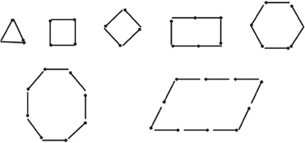
这是简单的用火柴棒拼搭基础图形的题目，一般来说，用火柴棒拼搭图形，基础图形无外乎三角形、正方形、长方形等。对于单个、独立的图形，只要按照图形的样式用火柴棒摆出图形的形状即可，没有太大的难度，这类拼搭是火柴棒图形游戏的基础性训练。
典型例题 2 用3根火柴棒可以拼出1个三角形，你能用6根火柴棒拼出2个独立的三角形吗？如果用5根火柴棒，你能拼出2个三角形吗？
拼搭1个三角形需要3根火柴棒，那么拼搭2个独立的三角形就需要6根火柴棒，所以用6根火柴棒可以拼搭2个独立的三角形，三角形可以是任意方向的。
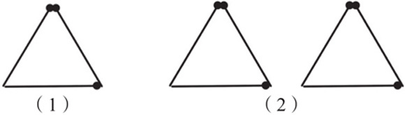
如果想用5根火柴棒拼搭出2个三角形，我们可以按照以下2个步骤来操作。
（1）先用3根火柴棒拼搭出1个独立的三角形，这样就用掉了3根火柴棒。
（2）还剩2根火柴棒，如果还要拼搭出1个三角形，就必须利用第1个三角形的1根火柴棒，即2个三角形需要共用1条边。第1个三角形的3条边都可以用，拼搭出来有以下3种效果。
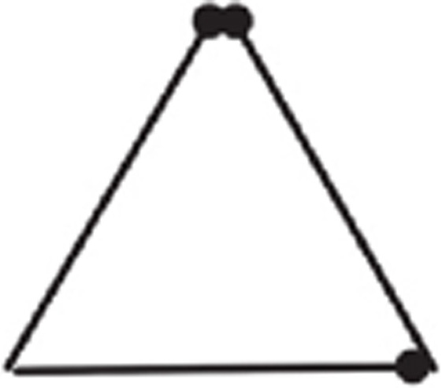
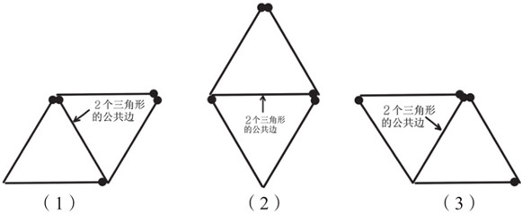
从上面的拼搭过程可以看出，在使用火柴棒拼搭图形时，如果火柴棒的数量不够，则某些火柴棒就要作为公共边来使用。
典型例题 3 看看右图中有几个正方形？如果再添2根火柴棒，能否拼搭出5个正方形？
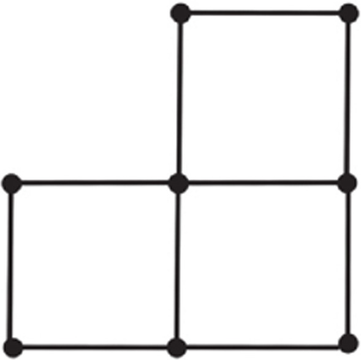
图中目前有3个正方形，2根火柴棒要拼搭出2个独立的正方形，需要利用如下图所示的2条公共边。
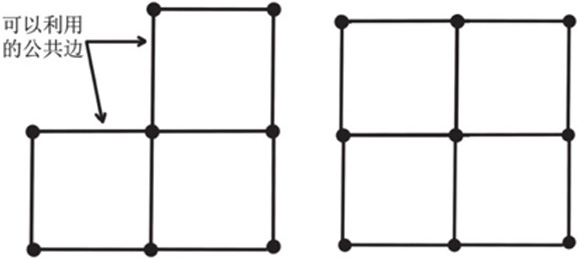
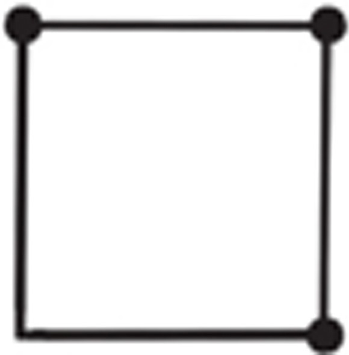
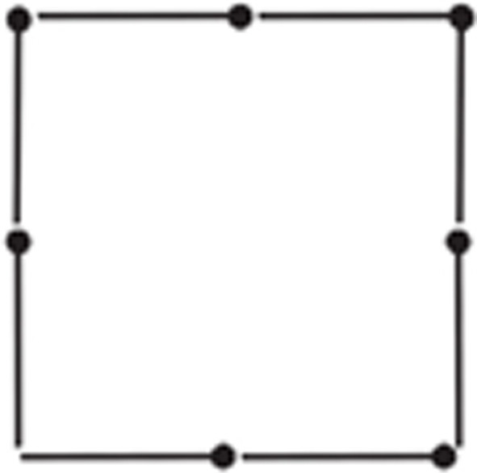
添加完成后，有4个小正方形和1个大的正方形，一共5个正方形。
典型例题 4 下面的图是用12根火柴棒拼搭成的田字形，能不能拿走2根火柴棒，把现在的图形变成2个正方形？
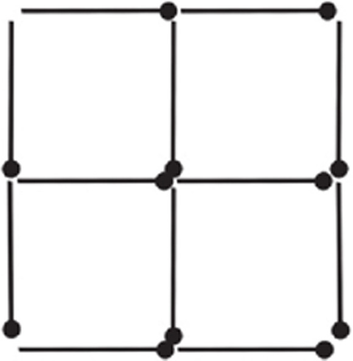
移除火柴棒是添加火柴棒的逆过程，田字形中原来有5个正方形，现在要变成2个正方形，一下减少3个正方形，也要从公共边考虑移除火柴棒。
如下图所示，可以移除2根作为公共边的火柴棒，这样图形中就剩下1个小正方形和1个大正方形。
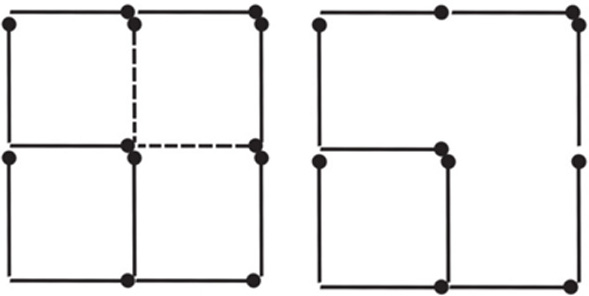
同样的方法，还可以去掉其他的2根火柴棒。
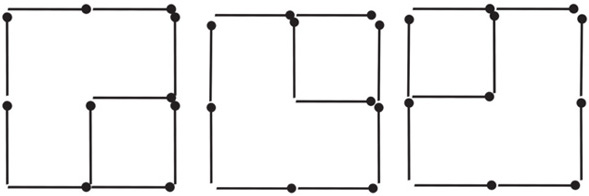
典型例题 5 右图是用12根火柴棒拼搭成的田字形，能不能移动4根火柴棒，使右图成为3个正方形？
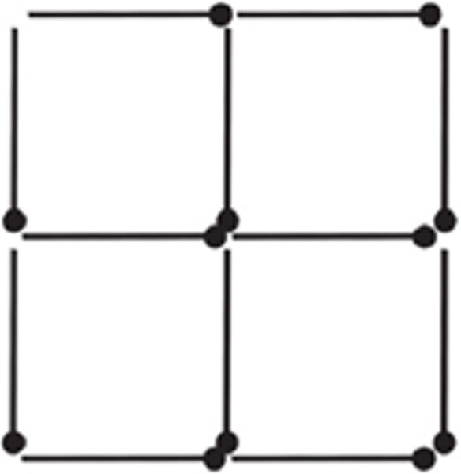
原来的图形有5个正方形，要减少2个正方形变成3个正方形，原来一共有12根火柴棒，正好可以拼搭成3个独立的正方形，说明移动火柴棒后的正方形也都是独立的，没有公共边。移动火柴棒后的图形如右图所示。
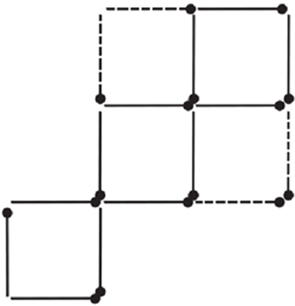
1.请用4根火柴棒拼搭出1个正方形，用7根火柴棒拼搭出2个正方形，用10根火柴棒拼搭出3个正方形。
2.请用16根火柴棒拼搭出5个同样大小的正方形。
3.请用9根火柴棒拼搭出4个同样大小的三角形。
4.至少要在右图上添加几根火柴棒，才能使图形含有8个正方形？
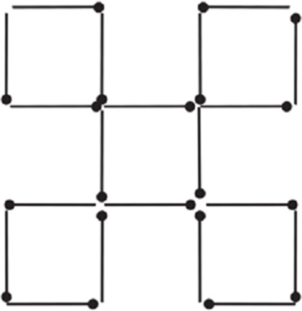
5.如果在右图上添加3根火柴棒，使图形变成2个一样的“凸”字形，该怎么添加呢？
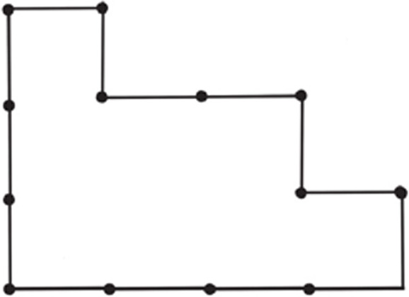
6.拿掉几根火柴棒可以使右边的图形变成3个三角形？如果拿掉3根，应该怎么拿？如果是4根呢？如果是5根呢？
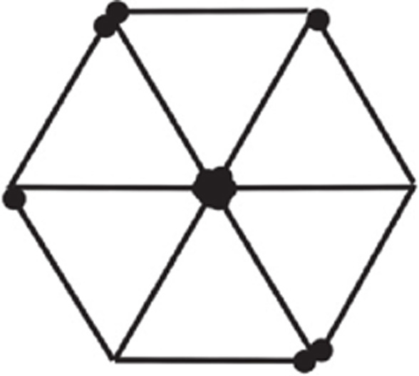
7.如果在右图中拿走3根火柴棒，使图形变成4个同样大小的正方形，怎么拿？如果要拿走5根火柴棒，使图形变成3个同样大小的正方形，怎么拿？
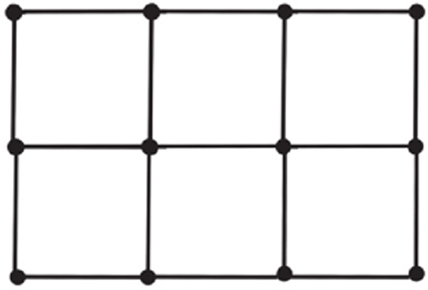
8.右图是用火柴棒拼搭的龙虾，怎么移动3根火柴棒，能使它的头从朝上变成朝下？
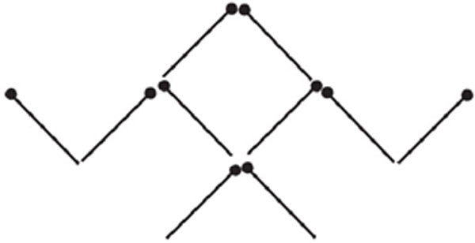
9.右图是用火柴棒拼搭的一个缺了一条腿并且倒放着的椅子。怎么移动2根火柴棒，能使椅子变成正着放，看上去也不缺腿？
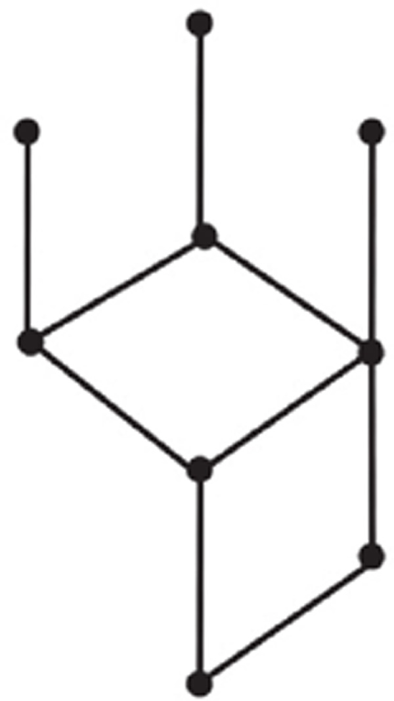
10.右图是用火柴棒拼搭的一座房子，它的朝向是朝左边的，请移动2根火柴棒，使它的朝向变成朝右。
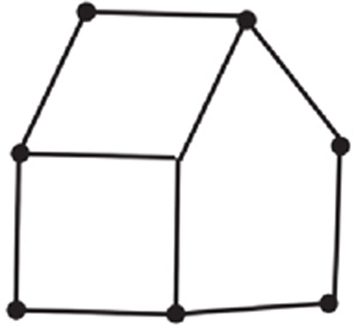
11.下图中，怎么移动3根火柴棒，能使苍蝇拍正好打中苍蝇呢？（黑点“●”代表苍蝇）
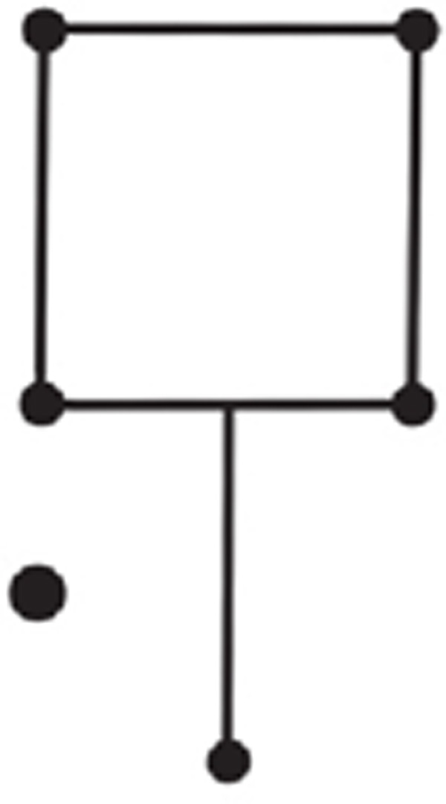
12.下图是用火柴棒拼搭成的小鱼，怎么移动2根火柴棒，能使小鱼的头变成朝上呢？
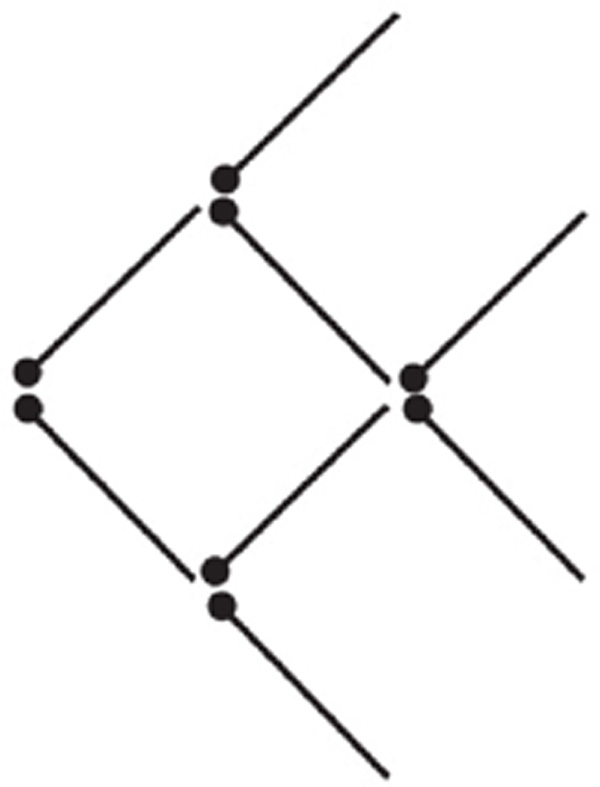
13.下图是由13根火柴棒拼搭成的一头牛，现在牛头朝右，你能移动2根火柴棒，使牛头朝左吗？
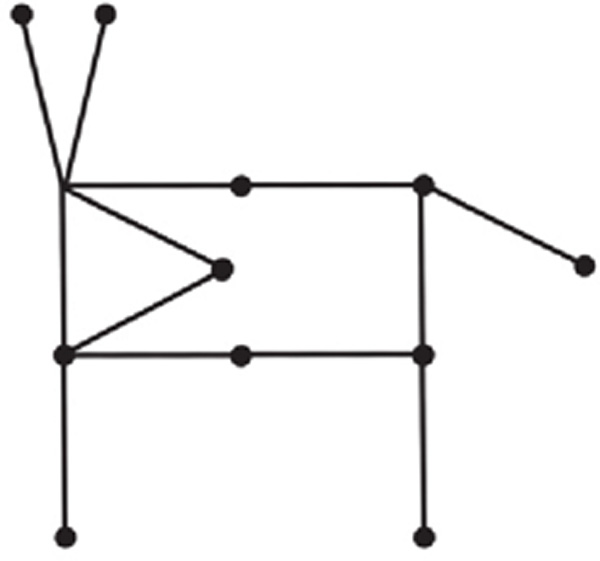